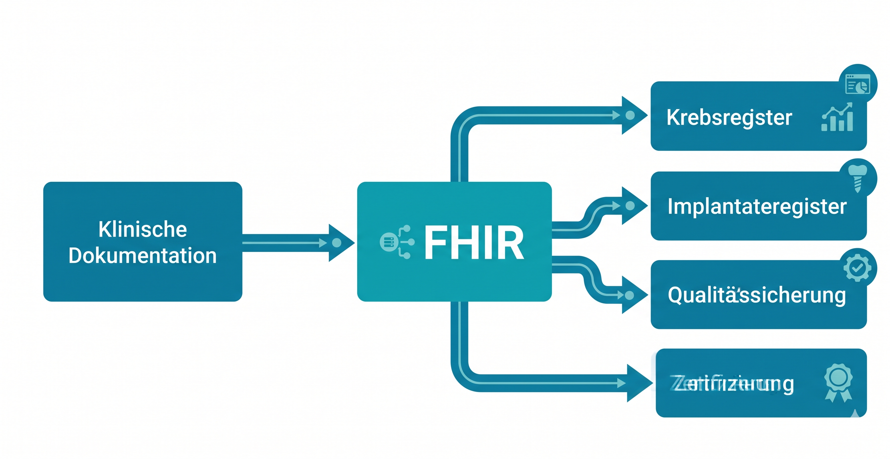

Kerndatensatz Senologie
0.1.0 - ci-build
Kerndatensatz Senologie - Local Development build (v0.1.0) built by the FHIR (HL7® FHIR® Standard) Build Tools. See the Directory of published versions
Zertifizierte Brustzentren dokumentieren die Versorgung ihrer Patientinnen für unterschiedliche Zwecke: die DKG-Zertifizierung (OnkoZert), die Krebsregistermeldung (oBDS), die gesetzliche Qualitätssicherung (IQTIG), das Implantatregister und die klinische Forschung. Obwohl sich die inhaltlichen Anforderungen dieser Meldewege weitgehend überschneiden, werden die Daten häufig redundant erfasst, in unterschiedlichen Formaten vorgehalten und separat ausgeleitet. Da die Datenanforderungen jeweils von den Empfängern her definiert werden, entsteht ein erheblicher Aufwand bei der Zuordnung und Transformation der klinischen Daten in die jeweiligen Zielformate. Hinzu kommen eigene und standortübergreifende Studien, die ihrerseits spezifische Datenanforderungen mitbringen. Die parallele Pflege all dieser Dokumentationsstränge führt zu Inkonsistenzen, Fehleranfälligkeit und einem Aufwand, der mit den verfügbaren Ressourcen kaum zu bewältigen ist.

Dieser Implementation Guide definiert ein gemeinsames Datenmodell für die strukturierte Dokumentation der Brustkrebsversorgung. Ziel ist es, klinische Informationen einmalig zu erfassen und daraus die verschiedenen Meldungen und Berichte abzuleiten. Anstatt für jeden Meldeweg ein eigenes System zu pflegen, wird ein geteiltes Modell geschaffen, das die Anforderungen aller Beteiligten abdeckt.
Ein wesentlicher Beitrag dieses IG ist die systematische Gegenüberstellung der verschiedenen Meldedatensätze. Die Anforderungen von oBDS, OncoBox, IQTIG und Implantatregister überlappen in weiten Teilen, unterscheiden sich jedoch in Details — etwa bei Kodierungen, Granularität oder Pflichtfeldern. Durch die explizite Dokumentation dieser Unterschiede entsteht eine Grundlage, auf der mittelfristig an einer stärkeren Harmonisierung der Meldewege gearbeitet werden kann.
Ein standortübergreifend einheitliches Datenmodell für die Senologie eröffnet Möglichkeiten, die über die reine Meldepflicht hinausgehen:
Dieser Implementation Guide richtet sich an unterschiedliche Nutzergruppen:
Dieses Datenmodell baut auf dem Kerndatensatz der Medizininformatik-Initiative (MII KDS Onkologie) auf und ist kompatibel mit den Informationstechnischen Systemen im Krankenhaus (ISiK). Die Konformität mit europäischen Standards (EHDS, European Patient Summary) wird angestrebt.
| Person | Institution / Funktion |
|---|---|
| Prof. Dr. med. Wolfgang Janni | DGGG, Vertreter der Arbeitsgemeinschaft Gynäkologische Onkologie |
| Prof. Dr. med. Markus Wallwiener | DGGG, Sprecher der Kommission Digitale Medizin; AGO, Stellvertretender Vorsitzender |
| Prof. Dr. med. Andreas Schneeweiß | DGS, Vorsitzender der Deutschen Gesellschaft für Senologie |
| Prof. Dr. med. Volkmar Müller | AGO, Sprecher Kommission Mamma |
| Prof. Dr. med. Achim Wöckel | S3-Leitlinienkoordination Mammakarzinom |
| PD Dr. rer. nat. Christoph Kowalski | Deutsche Krebsgesellschaft, Versorgungsforschung |
| Prof. Dr. med. Dipl.-Ing. Sylvia Thun | Berlin Institute of Health at Charité (BIH) |
Die vorliegende Spezifikation ist nicht als normative Vorgabe zu verstehen, sondern als wissenschaftliche Einladung zur gemeinsamen, intersektoralen Ausgestaltung eines einzelnen medizinischen Fachgebietes in seiner gesamten Granularität. Rückmeldungen, Korrekturen und Erweiterungsvorschläge sind ausdrücklich erwünscht.